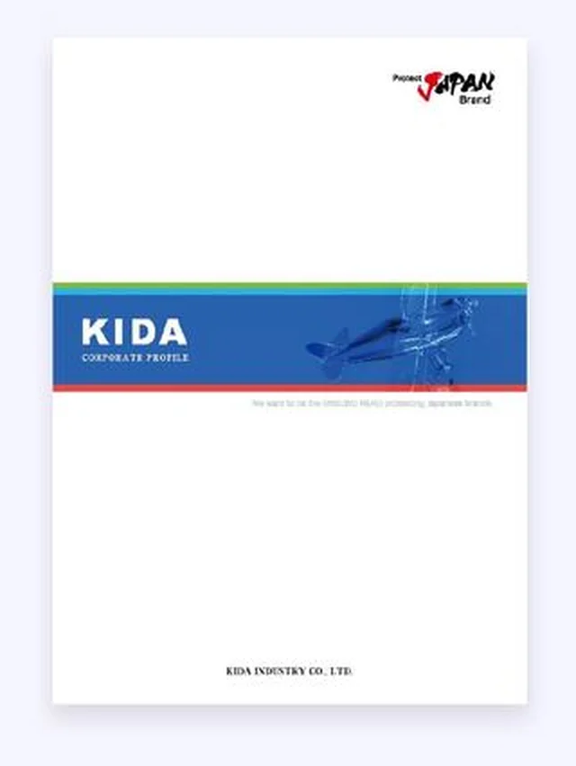
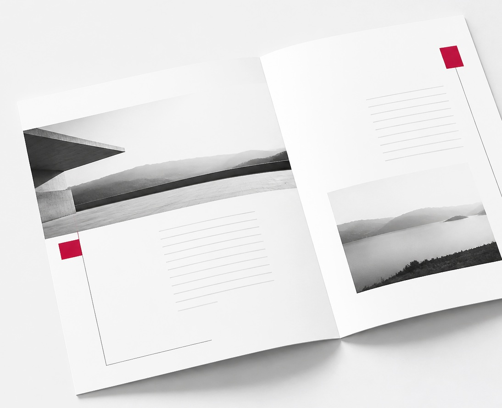

01
御社の中にある答えを
一緒に探します
会社案内に何を載せるべきかは、業種と渡す相手によって変わります。まず御社の理念・現場・強みをお聞きし、そこから構成をご提案します。
何を載せるかが決まっていない状態からでも構いません。


共感・課題提起
会社案内の制作は数年に一度、あるいは初めての仕事です。
このような課題はありませんか。
決まっているのは、作らなければならないという事実だけ。
その状態からご相談いただいて構いません。最後の一つについては、私たちの仕事そのものです。
会社の強みや理念は、そのまま並べても伝わりません。色、写真、構成、折り方、スローガン。私たちは、御社にしかない特色を、読み手に届く形へ翻訳します。実際の制作物で、何をどう変換したのかをご覧ください。
工業・製造／会社案内16P中とじ
特色（何を）
都内最大級の生産設備。社員一人一人が日本のモノづくりへのポリシーを持つ
デザイン判断（どのように）
その想いから Protect Japan Brand をスローガンとして提案。専門用語を避け、製造工程をフロア毎に図示

不動産・空き家再生／A4・4P＋ポケットフォルダ
特色（何を）
ニッポン再起動を掲げ、空き家再生で国内の住宅整備に貢献
デザイン判断（どのように）
古来より日本人に愛されてきた桜をモチーフに、社会課題を親しみやすさへ変換。ポケットフォルダには更新頻度を考えて普遍情報のみ掲載
リサイクル／会社案内8P両観音折
特色（何を）
未来の子供たちにも青い地球を残したい、が合言葉。買取から再生までの一貫体制
デザイン判断（どのように）
訴求点を自然環境の保護と一貫体制の2点に絞り込み。両観音折の面積を活かして工程を図示し、日英併記

同じ業種でも企業様ごとに特色は異なり、その解釈が合っているかどうかは、デザインに起こしてみないと分かりません。だから私たちは3案以上をご提示し、納得いただけるまで何度でも作り直します。
他の制作実績を見る01
会社案内に何を載せるべきかは、業種と渡す相手によって変わります。まず御社の理念・現場・強みをお聞きし、そこから構成をご提案します。
02
ページ数ごとの定価を公開しています。デザイン会社、ライター、カメラマン、印刷会社をそれぞれ手配する必要はなく、印刷費まで含めた総額を着手前にご提示するため、社内でのご説明にも困りません。
03
デザインは3案以上をご提示し、修正回数に制限は設けていません。正確で適切な掲載情報になるまで徹底的に対応します。初めてのご依頼で、途中で方向性が変わっても問題ありません。
官公庁から大手企業まで。20分野以上の制作実績があります
業種一覧
エンターテインメント、
進め方
お願いすること：現状の課題と、渡す相手をお聞かせください
お願いすること：構成案のご確認のみ。掲載内容はこちらからご提案します
複数の方向性から作成し、3案以上をご提示します。
修正回数に制限はありません。正確で適切な掲載内容になるまで、何度でも作り直します。
お願いすること：方向性のお選びとご意見
お願いすること：取材へのご対応。原稿の執筆は不要です
お願いすること：最終ご確認
ページ数ごとの明朗料金。印刷費まで含めた総額でご提示します
お問い合わせをいただく前に、おおよその費用がお分かりいただけます。
社内で予算をご申請いただく際の資料としても、そのままお使いください。
| 仕様 | 参考価格 |
|---|---|
| A4二つ折り 4ページ | 18万円から |
| A4中綴じ 8ページ | ※要確認 |
| A4中綴じ 16ページ | 43万円から |
| コーポレートサイト 5ページ | 30万円から |
| ランディングページ | 20万円から |
追加費用が後から発生しないよう、着手前に総額をご提示します。
修正回数は無制限ですが、それによる追加費用はいただきません。
印刷通販や
会社案内を作る手段は
それぞれに向き不向きがあるため、
| ADS | 大手制作会社 | 印刷通販 | クラウドソーシング | |
|---|---|---|---|---|
| 構成から相談できる | ○ | ○ | × | △ |
| 特色の読み解きと提案 | ○ | ○ | × | △ |
| 取材・撮影 | ○ | ○ | × | △ |
| 印刷まで一貫 | ○ | ○ | ○ | × |
| 修正回数 | 無制限 | 契約による | 不可 | 回数制限あり |
| 法人としての責任 | ○ | ○ | ○ | △ |
| 費用 | 中 | 高 | 低 | 低 |
すでに構成も原稿もお決まりで、
何を載せるかから
会社案内・パンフレットの
企業の価値や想いを、
クロージングとフォーム
ページ数、部数、
まずは御社の現状と、
ご相談・お見積もりは無料です。